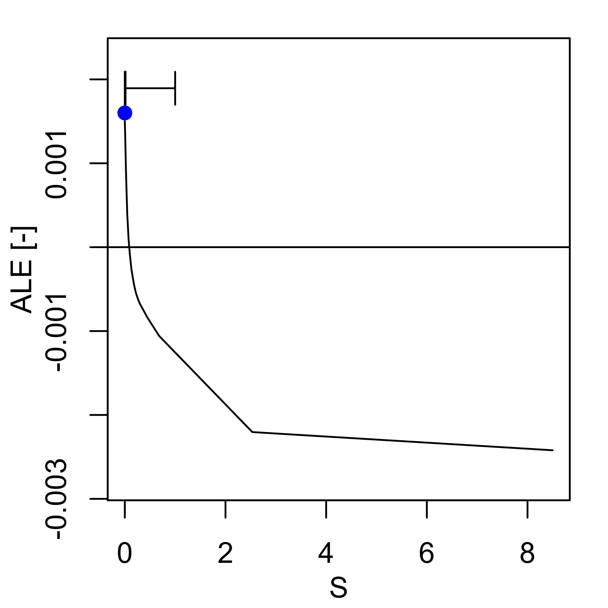

Several datasets are available to examine the ENM model performance and aid in model interpretation.
The performance measures can be retrieved from the
elements::PerformanceMeasures object; for example, below
the balanced accuracy from the random holdout sample and the model
tuning spatio-temporal cross-validation (Schratz et al., 2024) are
displayed.
pm_taxon <- subset(elements::PerformanceMeasures, taxon_code == "stellaria_graminea", select = c("Holdout.BalancedAccuracy", "STCV.BalancedAccuracy"))#> Holdout.BalancedAccuracy STCV.BalancedAccuracy
#> 5897 0.8600405 0.8599187The marginal effects of an ENM, in the form of Partial Dependency
Profile (PDP) and Accumulated Local Effect (ALE) plots (Molnar, 2018)
can also be viewed using the elements::plot_me function. By
setting the ‘presences’ argument to TRUE a box and whiskers plot showing
the distribution of presences is overlaid and by setting the ‘eivs’
argument to TRUE a point and arrows showing the EIV and niche width
values are overlaid, where available in
elements::VariableData.
elements::plot_me(taxa = "stellaria_graminea",
me_type = "ale",
free_y = TRUE,
presences = TRUE,
eivs = TRUE,
vars = c("L", "M", "N", "R", "S", "SD", "GP", "bio05", "bio06", "bio16", "bio17"))
Multiple taxa can be supplied in the “taxa” argument, in this case the ability to plot presence box and whisker plots and EIV points and arrows is disabled.
elements::plot_me(taxa = c("galium_boreale", "galium_saxatile", "galium_uliginosum", "galium_sterneri", "galium_aparine"),
me_type = "pdp",
normalise = TRUE,
vars = c("L", "M", "N", "R", "S", "SD", "GP", "bio05", "bio06", "bio16", "bio17"))
⚠ A note on ALE plots
In some instances the ALE curves may appear ‘inverted’ and not ecologically realistic, this is most often seen in situations where the distribution of presences along a variable gradient is extremely narrow and/or where there is a non-unimodal distribution, which causes extrapolation issues in the ALE calculations. For example, Gymnocarpium robertianum has a extremely narrow distribution of plot-mean S values, with a maximum value of 1.
In these instances it is important to also visualise the PDP plots, which should then be prioritised when inspecting the shape of the univariate response.

</ details>